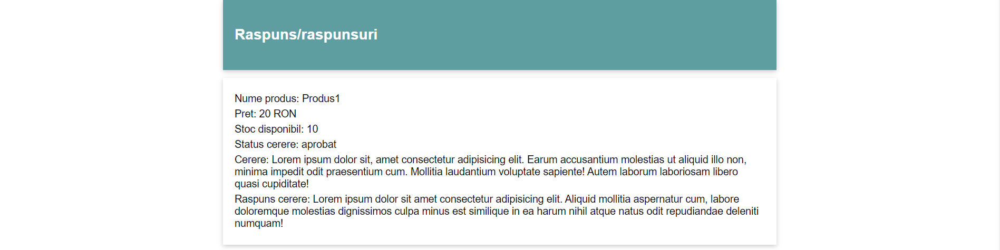
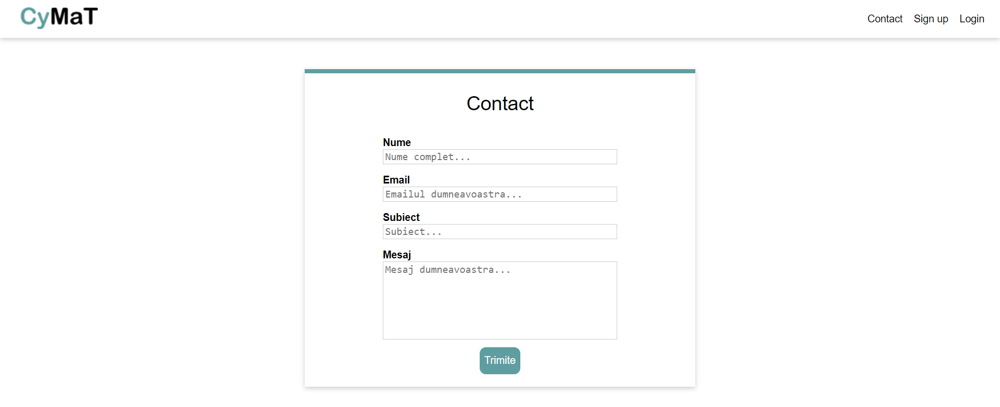

Introducere
1.1 Scop
Site-ul CyMaT reprezintă un sistem online de management al programărilor și stocurilor unui service de biciclete. Scopul principal al sitului este de a ajuta administratorul să-și gestioneze mai ușor operațiunile și de a ajuta clientul să-și repare bicicleta sau să schimbe anumite piese.
1.2 Audiența țintă
Acest document este destinat tuturor persoanelor deținătoare de bicicletă, ce doresc să afle mai multe informații despre site, cum ar fi: cum se poate face o rezervare la service sau, în cazul unui administrator, cum să-și gestioneze operațiunile din cadrul service-ului.
1.3 Scopul sitului
Site-ul are scopul de a ajuta administratorul service-ului să-și gestioneze cât mai ușor operațiunile, iar clienților le pune la dispoziție o metodă de a realiza ușor o programare la service într-o zi disponibilă pentru reparații sau pentru cumpărare de produse aflate în stoc pentru bicicletele personale.
1.4 Referințe
Pentru a putea realiza o interfață a site-ului cât mai atractivă și ușor de folosit, am analizat câteva situri:
w3schools.comDescriere
1.1 Perspectiva produsului
Produsul își propune gestionarea operațiunilor unui service de biciclete (programări, stocuri etc.).
1.2 Funcționalitățile produsului
Cu ajutorul sitului, administratorul unui service de biciclete va putea respinge/aproba programări din partea clienților; va avea posibilitatea de a iși gestiona produsele (preț, stoc, adăugare produs nou); va putea trimite comenzi de piese către furnizori. De altfel, va avea și posibilitatea de a importa fișiere .csv/.json care conțin produse/comenzi furnizori într-un mod mai rapid decât dacă ar fi introduse pe rând, de asemenea va putea și exporta astfel de date.
Clientul va avea posibilitatea de a trimite o întrebare/realiza o programare către service pentru a-și putea rezolva problemele tehnice ce țin de biciclete. Acesta va fi nevoit să aștepte un răspuns din partea administratorului.
1.3 Categorii de utilizatori
Situl va putea fi folosit de orice persoană obișnuită cu cunoștințe minime de navigare pe un site, fiind intuitiv și ușor de utilizat, și care are în posesie o bicicletă.
1.4 Mediu de operare
CyMaT este o aplicație WEB ce folosește HTML și CSS, deci poate fi rulată în orice browser.
1.5 Design și constrângeri de implementare
Excluzând formatul imaginilor ce va trebui respectat și tipul fișierelor ce pot fi încărcate pe sit, putem concluziona că nu există alte constrângeri de implementare/design, luând în considerare și funcționalitățile existente.
Cerințe externe
1.1 Interfață utilizator
Formular Client
Raspunsuri Client
Administrator - Cereri
Administrator - Stocuri
Administrator - Comenzi Furnizor
Administrator - Import
Administrator - Export

Contact
Login
Sign Up
1.2 Interfață software
Aplicația se conectează la o bază de date relațională pentru a putea stoca atât datele utilizatorilor, cât și programările, produsele, comenzile către furnizori etc..
1.3 Interfață de comunicare
User-ul și server-ul folosesc protocolul de comunicare HTTP pentru a interacționa.
Funcționalități
1.1 Autentificare/Înregistrare
User-ul care deține deja un cont va introduce numele de utilizator și parola pentru autentificare, respectiv user-ul care nu are un cont va introduce pe lângă acestea și adresa de e-mail și numele complet pentru crearea unui cont. Datele introduse, după validare, vor fi trimise către server.
1.2 Realizarea unei programări și descrierea problemei de către client
Clientul service-ului va putea completa un formular în care trebuie să aleagă o zi dintre cele disponibile și va trebui să completeze spațiul special alocat descrierii problemei ce urmează a fi evaluată de către administrator. Cererea lui va fi fie acceptată, fie refuzată după evaluare. Răspunsul va fi afișat după formular.
1.3 Administrator - Cereri
Persoana responsabilă de evaluarea cererilor trimise de către clienți va putea accesa secțiunea "Cereri" din cadrul sitului, după autentificare, unde are posibilitatea de a trimite un mesaj de răspuns și prețul aferent serviciilor prestate. Acesta va trebui să accepte sau refuze (în funcție de situație) o cerere pentru a putea fi trimis mesajul către client.
1.4 Administrator - Stocuri
În această secțiune administratorul va putea adăuga un produs nou după completarea formularului sau va putea actualiza prețul/stocul produselor deja existente.
1.5 Administrator - Comenzi furnizor
Aici vor putea fi vizualizate informații legate de comenzile plasate către un anumit furnizor, cum ar fi: estimat de livrare, preț, cantitate comandată etc.. De altfel, vor putea fi plasate și comenzi noi către un furnizor.
1.6 Administrator - Import
Administratorul va avea posibilitatea importării de fișiere .csv/.json în care pot exista mai multe produse/comenzi către furnizori ce vor fi încărcate automat în cadrul sitului, astfel evitând plasarea lor manual, rând pe rând.
1.7 Administrator - Export
În cadrul acestei secțiuni administratorul va putea exporta în format .csv/.json/.pdf produsele existente pe site sau comenzile către furnizori, având posibilitatea de modificare și reîncărcarea ulterioară pe sit, folosind secțiunea import.
1.8 Contact
Clienții vor putea lua legătura cu administratorul sitului pentru orice eventuale probleme sau întrebări.
Cerințe non-funcționale
Aplicația WEB este una sigură, posibile probleme ar putea apărea din partea bazei de date folosite.
Aplicația va fi protejată împotriva atacurilor de tip SQL-injection.